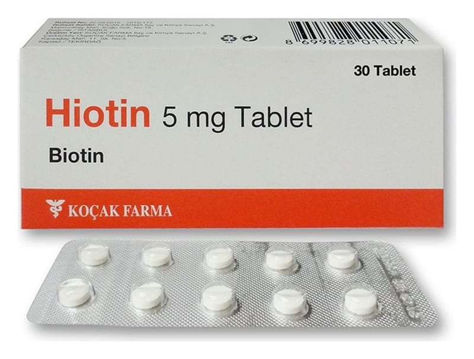

Hiotin 5 mg Tablet, Tablet, 90 Adet

Ne için kullanılır
KT · Bölüm 1HİOTİN, B kompleks vitaminlerinden, suda çözünen bir vitamindir. Kas, saç, tırnak ve cildin sağlıklı olmasını sağlayan önemli bir faktördür.
HİOTİN’de yardımcı madde olarak kullanılan laktoz anhidr sığır kaynaklıdır.
HİOTİN, beyaz renkli, bir yüzü ortadan çentikli, yuvarlak tabletler halinde 30, 60 ve 90 tabletlik blister ambalajlarda piyasaya verilmiştir.
HİOTİN, aşağıdaki durumlarda kullanılır; Tespit edilmiş biotin eksikliği (biotinidaz enzim eksikliği, kronik alkolizm, uzun süreli antiepileptik kullanımı, inflamatuar bağırsak hastalıkları, gastrektomi gibi durumlardan kaynaklanan) durumlarında kullanılır .